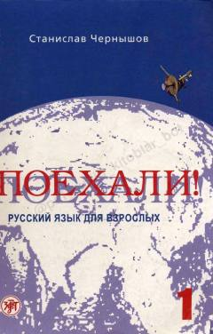

ПРKattalar uchun rus tilini o'rganishga mo'ljallangan samarali boshlang'ich darslik.
Ushbu darslik kattalar uchun rus tilini o'rganishga mo'ljallangan boshlang'ich kursdir. Kitob grammatika va so'zlashuv qoidalarini o'z ichiga olib, o'quvchilarga tilni tez va samarali o'zlashtirish imkonini beradi.